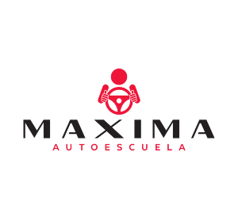
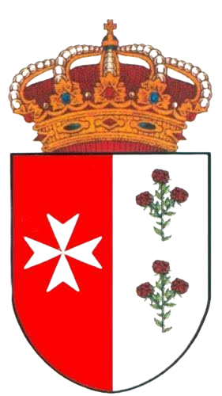
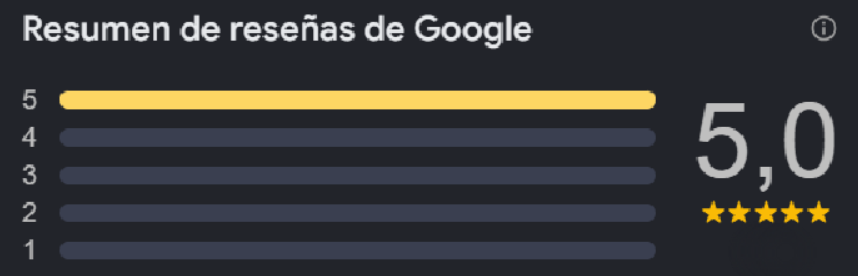

¿Quiénes somos?
Somos un equipo de profesionales cualificados y apasionados por la enseñanza teórica y práctica de la conducción. Nuestra misión va mucho más allá de ayudar a nuestros alumnos a aprobar un examen: nos dedicamos a formar conductores seguros, responsables y eficientes para toda la vida.

¿Dónde nos encontramos?
Nuestro equipo profesional está ubicado actualmente en Tocina y Los Rosales, un pueblo de 9.500 habitantes de Sevilla, es un pueblo seguro y tranquilo. Además, Autoescuela Máxima busca expandirse hacia otros pueblos.
Antes de Autoescuela Máxima estaba Autoescuela "La Vega", que tenia 4 autoescuelas en: Villanueva del Rio, Las Minas, Carmona y Tocina y Los Rosales.

Nuestras estadísticas
Ahora mismo contamos con 5 estrellas de valoración en Google, esa estádistica es la menos importante. La más importante es que más de el 80% de personas salen satisfechas con el servicio, además, tiene una altisima tasa de aprobados en el permiso B, pero la más alta de todas es en el permiso A2, que cuenta con una tasa de casi el 90% de aprobados.
